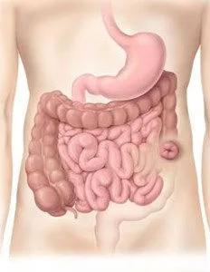
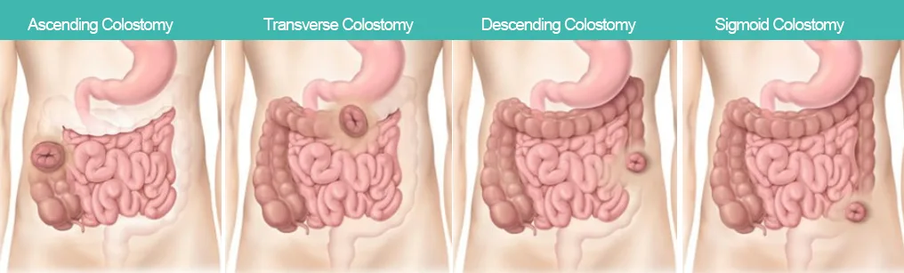
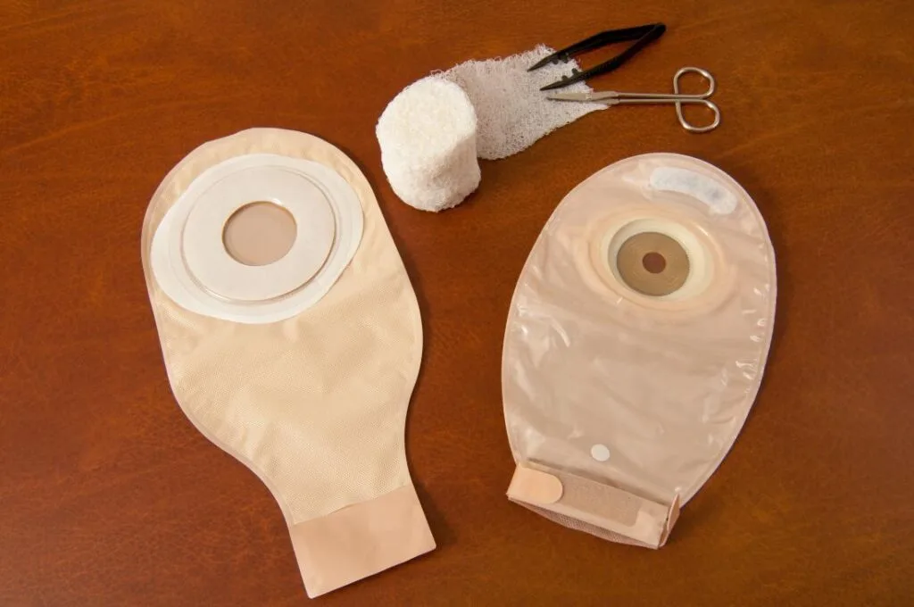
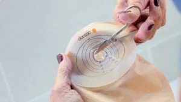
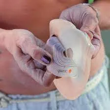
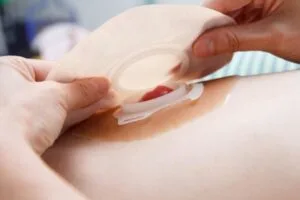
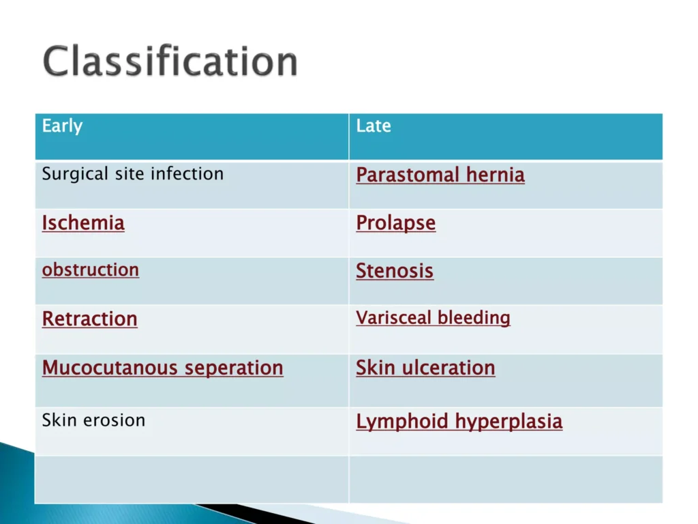

Expanded Nursing Uganda Explanation
Perform Colostomy Care should be understood beyond a short definition. Link the concept to patient history, focused assessment, common risks, nursing priorities, documentation and evaluation of outcomes.
01 Colostomy Care
Colostomy is the surgical procedure of creating of an opening (ie. Stoma) into the colon intestine through the abdominal wall.
A colostomy is an operation that redirects the colon from its normal route , down toward the anus, to a new opening in the abdominal wall . The opening is called a stoma .
An ileostomy is a surgical procedure that brings a portion of the small intestine (the ileum) to the surface of the abdomen , creating an opening called a stoma . This opening allows stool to exit the body directly, bypassing the colon entirely.
- Feature Ileostomy Colostomy
- Intestinal Segment Ileum (small intestine) Colon (large intestine)
- Stool Consistency Liquid or semi-liquid Can range from liquid to formed
- Frequency Frequent (multiple times a day) Less frequent than ileostomy
- Odor Stronger odor Generally less strong than ileostomy
- Control Limited control over bowel movements More potential for control over bowel movements
- Reasons Ulcerative colitis, Crohn’s disease, colon cancer, etc. Similar reasons to ileostomy, but also for conditions specific to the colon
02 Purpose of colostomy care
It allows for drainage or evacuation of colon contents to the outside of the body.
Needs for the colostomy care:
- Maintain Stoma and Peristomal Skin Integrity : This includes protecting the stoma from trauma, irritation, and infection, as well as maintaining the health of the skin surrounding the stoma.
- Prevent Skin Breakdown : This includes minimizing the risk of lesions, ulcerations, excoriation, and other skin issues caused by fecal contaminants.
- Prevent Infection : Colostomy care should prioritize preventing bacterial and fungal infections that can occur due to exposure to fecal matter.
- Promote General Comfort : This includes minimizing discomfort, irritation, and odor associated with the colostomy.
- Enhance Self-Image and Self-Concept : Colostomy care should consider the psychological impact of living with a colostomy and aim to promote a positive self-image and body image.
- Ensure Effective Fecal Evacuation : This includes using appropriate pouching systems that effectively collect and contain fecal matter.
- Reduce Odor : Colostomy care should involve strategies to minimize unpleasant odors, such as regular pouch changes, odor neutralizers, and proper hygiene practices.
Indications of Colostomy
- Tumors of the Colon : This includes both benign and malignant tumors that require surgical intervention.
- Trauma and Perforation of the Colon : Severe injuries to the colon can necessitate a colostomy to allow for healing and prevent infection.
- Inflammatory Diseases of the Colon: Conditions like ulcerative colitis, Crohn’s disease, and diverticulitis may require a colostomy to manage inflammation, reduce symptoms, and allow for healing.
- Congenital Anomalies of the Gastrointestinal Tract (GIT) :
- Hirschsprung’s Disease : This congenital condition causes a lack of nerve cells in the colon, leading to constipation and fecal retention.
- Necrotizing Enterocolitis : This serious condition, primarily seen in premature infants, involves inflammation and death of the bowel.
- Imperforate Anus : This condition occurs when the anus is absent or blocked, requiring surgical intervention.
- Other Anomalies : Other congenital malformations of the colon, such as anorectal malformations, may require a colostomy.
03 Type of colostomy:
By Location
- Ascending Colostomy: Located in the ascending colon, on the right side of the abdomen. It produces more frequent, liquid stools.
- Transverse Colostomy : Located in the transverse colon, across the abdomen. Stools are usually semi-solid and less frequent.
- Descending Colostomy : Located in the descending colon, on the left side of the abdomen. Stools are usually formed and more consistent.
- Sigmoid Colostomy : Located in the sigmoid colon, in the lower left abdomen. Stools are generally formed and can sometimes be controlled by regulating bowel movements.
By Duration:
- Permanent Colostomy : This type of colostomy is intended to be long-term or lifelong. It’s usually performed when the original colon has been removed or severely damaged.
- Temporary Colostomy: This type of colostomy is intended to be temporary, used to allow a portion of the colon to heal or to divert stool flow while other s urgeries are performed.
By colostomy operation.
- Loop Colostomy : This type involves creating a loop of the colon that is brought to the surface of the abdomen. The loop is divided by a bridge of tissue, with one opening for stool and the other for mucous discharge. A loop colostomy is often the method of choice when a colostomy is meant to be temporary because it’s easier to reverse.
- End Colostomy : This type involves bringing the end of the colon to the surface of the abdomen, creating a single opening for stool. An end colostomy is often done when the colostomy is expected to be permanent. In this procedure, after your bowel is cut, the end of the remaining active bowel is stitched to the opening in your abdominal wall, and the end of the remaining inactive bowel is sealed.
- Double-Barrel Colostomy : This type involves bringing both ends of the colon to the surface of the abdomen, creating two separate openings.
Characteristics of faces according to the site of colostomy:
- Type Consistency Frequency Odor Skin Irritation Pouching Control
- Ileostomy Liquid Frequent (multiple times per day) Strong High Continuous Low
- Ascending Colostomy Liquid or semi-liquid Frequent Strong Moderate Continuous Low
- Transverse Colostomy Mushy or semi-solid Less frequent Strong Moderate Continuous Moderate
- Descending Colostomy Solid Less frequent Moderate Low Needed Moderate
- Sigmoid Colostomy Similar to normal bowel movements Closer to normal bowel frequency (1-2 times/day) Similar to normal Low Often needed, longer wear times possible High
Note :
- Control : Refers to the ability to control bowel movements.
- Pouching : Continuous pouching means the pouch needs to be worn all the time.
04 Procedure of Colostomy Care
Requirements
- Top shelf Bottom shelf
- – Bowl of warm water – Disposable gloves
- – Gauze swabs – Soap in a dish
- – Cotton balls – New colostomy bag
- – Graduated container – Colostomy adhesive and measuring guide
- – Large receiver – Barrier cream
- – Towel
Procedure
- Steps Action Rationale
- 1. Follow the general rules.
- 2. Turn down the bed clothes. To expose the stoma and to avoid soiling bed clothes
- 3. Remove the soiled bag gently, taking care not to pull the skin. To protect underlying skin from damage.
- 4. Wash the area around the stoma with soapy water and dry well. Apply a little barrier cream if necessary. To remove excretions and old adhesive.
- 5. Re-measure the stoma and make the correct measurement. To make sure that the bag fits correctly.
- 6. Cut the correct size of circle in the stoma adhesive, using the measuring guide and apply it on the stoma. An opening that is too small can cause trauma to the stoma, exposed skin will be irritated by urine if opening is too large
- 7. Apply a clean bag on the stoma To prevent infection.
- 8. Remove the soiled articles, assess patient’s response to the procedure and leave the patient comfortable. Promotes more patient’s understanding about the colostomy and the need for more instructions.
- 9. Wash and dry hands.
Procedure of the Colostomy care in children
- Assemble the needed equipment.
- Explain procedure to child, encourage child interaction to alley anxiety.
- Wash hand with soap and water, rinse and dry, to prevent contamination of hand, reduce risk infection transmission
- Put on gloves to avoid transmission of infections.
- Place a towel or disposable waterproof (mackintosh) under the child, to prevent seepage of feces onto skin.
- Auscultate for bowel sound.
- Place linen saver on abdomen around and below stoma opening.
- Carefully remove pouch and wafer appliance and place in plastic waste bag (save tail closure for reuse) :remove wafer by gently lifting corner with finger of dominant hand while pressing skin downward with fingers of non-dominant hand remove small sections at a time until entire wafer is removed. place 4×4- in , gauze over stoma opening
- Assess stoma and peristomal skin, observe existing skin barrier, and stoma for color , swelling , trauma , healing : stoma should be moist and reddish pink .
- Empty pouch ; measure waste in graduated container before discarding and record amount of fecal content .
- Remove and discard gloves , perform hand washing , and wear new gloves.
- Remove used pouch and skin barrier gently by pushing skin away from the barrier to reduce skin trauma.
- Cleans peristomal skin gently with warm tap water using gauze pads .
- Measure stoma for correct size of pouching system needed , using the manufacturer’s measuring guide.
- Select appropriate pouch for client based on client assessment. With a custom cut –to- fit Pouch , use an ostomy guide to cut opening on the pouch. prepare the pouch by removing backing from barrier and adhesive.
- Leaving intact adhesive covering of skin-barrier wafer .
- Remove gauze and apply stoma paste around stoma or to edges of opening in wafer .
- Remove adhesive covering of wafer, and place wafer on skin with hole centered over stoma: hold in place for about 30 sec .
- Center pouch over stoma and place on wafer.
- Praise the child for helping
- Restore or discard all equipment appropriately
- Remove and discard gloves and perform hand hygiene
- Spray room deodorizer , if needed to get rid of unpleasant odor.
- Record type of pouch ,skin barrier, amount, appearance of faeces, condition of stoma and skin around it
05 Nursing Diagnosis:
1. Comfort Alteration related to abdominal incision evidenced by:
- Reports of pain at the incision site.
- Grimacing or guarding behavior.
- Elevated pain scores on a pain scale.
- Difficulty with movement or ambulation.
- Restlessness or anxiety related to pain.
2. Impaired Skin Integrity related to the presence of stoma evidenced by:
- Presence of redness, swelling, or irritation around the stoma.
- Skin breakdown, such as abrasions, fissures, or ulcers.
- Reports of discomfort or itching around the stoma.
- Leakage or drainage from the stoma.
3. Body Image Disturbance related to the presence of stoma evidenced by:
- Expressing negative feelings or self-consciousness about the stoma.
- Avoiding social situations or activities.
- Difficulty looking at or touching the stoma.
- Statements about feeling unattractive or different.
4. Knowledge Deficit related to stoma care and lack of experience evidenced by:
- Asking numerous questions about stoma care.
- Demonstrating incorrect stoma care techniques.
- Expressing anxiety or fear about managing the stoma.
- Lack of confidence in performing self-care activities.
06 Nurses Consideration
Assessment of the Stoma
- The stoma should be pink. A dusky blue stoma indicates ischemia, and a brown-black stoma indicates necrosis.
- Assessment of stoma color should be done every 8 hours.
- There is mild to moderate swelling of the stoma in the first 2-3 weeks after surgery. This could be due to trauma to the stoma or any medical condition that results in edema. Severe edema could be due to obstruction of the stoma, allergic reaction to food, or gastroenteritis.
- Small oozing/bleeding from the stoma mucosa when touched is normal because of its high vascularity. Moderate to large amounts of bleeding from the stoma could indicate coagulation factor deficiency, lower gastrointestinal bleeding, etc.
Protecting the Skin
- The skin should be washed with mild soap, rinsed with warm water, and dried thoroughly before the skin barrier is applied.
- Skin barriers include petroleum jelly gauze or protective ointment smeared around the stoma to keep the skin from becoming irritated. Hollister skin or stoma adhesive barriers are applied. However, the ointment must be removed at frequent intervals to ascertain that the skin under the protective coating remains in good condition.
- The patient is provided with dressing items for changing the dressings and colostomy. A dressing tray is needed for this.
Clothing
- Immediately after surgery, many patients choose to wear loosely fitting clothes.
- Clients should not wear a leather belt over the stoma to avoid irritation.
- All pouching systems are waterproof, so clients can bathe, shower, and swim while wearing them.
- Clients can remove soiled pouches and shower without them but not with an ileostomy because bowel function with an ileostomy is fairly frequent and unpredictable.
Activity
- Heavy lifting is prohibited for 6-8 weeks after abdominal surgery to prevent hernia, which can occur in the incision and around the stoma.
Diet
- Clients should follow a low-fiber diet for approximately 1 month. After one month, a person with a colostomy can follow a regular diet.
- Ileostomy diet should be closely monitored. Foods that cause blockage, such as popcorn, many vegetables, nuts, and meat, should be avoided.
Client and Family Teaching
- The medical team assists the client and family with various aspects of ostomy care.
Health Education
The patient should be able to do the following before being discharged:
- Change the colostomy bag : apply and change the pouch to collect intestinal drainage and empty it when it is 1/3 full to prevent leakage.
- Care for the skin, control odor, maintain general hygiene, care for the stoma, and identify signs of complications . They should be able to cleanse the skin and use skin barriers and deodorants to prevent skin breakdown and bad odor.
- Understand the importance of fluids and food in the diet: identify a well-balanced diet and dietary supplements to prevent nutritional deficiencies, identify foods that reduce diarrhea, gas, or obstruction, drink at least 3 liters per day to prevent dehydration unless contraindicated, and increase fluid intake during hot weather, excessive sweating, and diarrhea to replace losses.
- Know how to get additional supplies, addresses of supply departments.
- Understand the importance of follow-up care : report signs and symptoms of fluid and electrolyte deficits, fever, diarrhea, skin irritation, other stoma problems such as changes in appearance or function, changes in the peristomal area, tenderness, redness, and pain.
Selecting the Pouch
- The colostomy bag should be transparent, plastic, odor-proof, cut large enough to envelop the stoma, and fit snugly to prevent fecal contents from getting onto the skin and staining the patient’s gown or bed linen. It should have a valve for drainage of the content or be changed whenever it is full if it does not have this provision.
- The pouch should not be placed directly on the skin without the skin barrier.
- The volume, color, and consistency of the drainage are recorded each time the bag is changed, and the condition of the skin is observed for irritation. The content of the ascending and transverse colon is liquid in nature, while that from the descending and sigmoid colon is semi-formed or formed.
- The patient should be observed for fluid and electrolyte imbalance if large volumes of drainage are present. In the case of an ileostomy, in the first 24-48 hours post-operatively, there will be a high volume output of 1000-1800 ml/day, but it should reduce to 800ml daily.
- Encourage the patient to take 2-3 liters of fluids daily and more if diarrhea is present.
Colostomy Irrigation
- This is intended to regulate bowel function and treat constipation. It is a small enema done through the stoma using lukewarm water (500-1000ml), but a soft large bore catheter is used to avoid bowel perforation. Do not force the tube if there is resistance to Tubal entry.
Feeding after Colostomy and Control of Smell
- The diet should be of low-roughage initially and then reintroduced later gradually. Seeds should be chewed properly, and hard ones avoided to prevent small bowel obstruction.
- Foods that cause smell should be avoided, e.g., eggs, onions, fish, cabbage, alcohol, etc.
- Gas-forming foods should be avoided or eaten in moderation, e.g., beans, onions, cabbage, potatoes, beer, carbonated beverages, etc.
- Diarrhea-causing foods such as alcohol, spinach, green beans, coffee, spicy foods, and raw fruits should be avoided.
- A regular diet is encouraged later on, and a normal one is very important as long as the above is put into consideration.
Assisting the Patient to Adapt Psychologically to a Changed Body and Sexual Activity
- Stress the need for the patient to care for the colostomy but do not force them until they show readiness to do so.
- Every effort should be made to keep the patient as clean and dry as possible, as they may become depressed at the sight of fecal drainage, particularly if it is so liquid and soils the bed linen and gown.
- Soiled linen should be disposed of neatly and quickly.
- Reassure the patient that fear of continuous drainage should not keep them from moving about freely.
- The social impact of the stoma is interrelated with the psychological, physical, and sexual aspects.
- Concerns of people with stomas include the ability to resume sexual activity, altering clothing styles, the effect on daily activities, sleeping while wearing a pouch, passing gas, presence of odor, cleanliness, and deciding when or if to tell others about the stoma. The fear of rejection from a partner or the fear that others will not find them desirable as a sexual partner can be a concern. The nurse should encourage open communication about feelings and realize that the patient needs time to adjust to the pouch and body changes before feeling secure in their sexual functioning.
- Pregnancy is possible with a colostomy, but the number of pregnancies needs to be limited.
07 Nursing Care Guidelines
General Care
- Be gentle yet professional : Approach all aspects of ostomy care with empathy and professionalism to ensure patient comfort and trust.
- Observe stoma condition : Regularly inspect the stoma for any changes in color, size, or appearance.
- Maintain cleanliness : Change any appliances, dressings, or linens that become soiled to prevent infection.
- Check for undissolved medications : When changing an ileostomy appliance, inspect for any undissolved tablets or capsules that may indicate absorption issues.
- Provide special skin care : Protect the skin around the stoma with appropriate barriers and treatments to prevent irritation and infection.
- Clean with care : Once the stoma is healed, clean it with mild soap and water. Avoid using alcohol, and discontinue soap if it causes irritation. If redness or yeast-like growth appears, consult a healthcare provider.
- Encourage independence : Teach the patient how to remove and apply new appliances, and what to monitor and report regarding bowel changes.
- Support emotional health : Allow the patient to express their feelings, encourage questions, and address any misconceptions they may have.
Abnormal and Danger Signs in a Stoma
- Abnormal sounds : Unusual noises from the stoma may indicate issues.
- Excessive bleeding: Any significant bleeding should be reported immediately.
- Color changes : Darkening of the stoma can indicate stenosis and compromised blood supply. Bleaching or extreme lightening suggests a lack of circulation.
- Drying of the stoma : The stoma should remain moist; drying may indicate problems.
- Signs of infection : Look for redness, swelling, or discharge.
- Edema of the stoma : Swelling could indicate an obstruction or other complications.
Routine Observations
- Appliance size : Ensure the appliance fits correctly, not too tight to cut off circulation, but snug enough to prevent leakage.
- Daily weight: Monitor the patient’s weight daily to assess for any significant changes that could indicate fluid or nutritional imbalances.
- Electrolyte balance : Regularly check blood work results to monitor for any imbalances.
- Stool assessment: Record the amount and character of stool to identify any changes or issues.
- Vital signs : Regularly monitor vital signs to detect any early signs of complications.
08 Complications of Colostomy
1. Surgical Complications :
- Wound Infection : Bacteria can enter the surgical wound, causing inflammation, pain, and potential delay in healing.
- Hemorrhage : Bleeding from the surgical site can occur, requiring prompt medical attention.
- Parastomal Hernia: A bulge of abdominal contents through the weakened abdominal wall around the stoma.
2. Stoma-Related Complications :
- Stenosis : Narrowing of the stoma, leading to difficulty passing stool and potential blockage.
- Prolapse : The stoma protrudes outwards from the abdomen, potentially causing discomfort and interfering with pouch adherence.
- Retraction : The stoma can retract or shrink, making it challenging to attach the colostomy bag securely.
- Necrosis : Death of stoma tissue, usually due to insufficient blood supply, requiring emergency surgery.
3. Skin Issues :
- Skin Irritation and Breakdown : Prolonged exposure to fecal matter can lead to skin irritation, inflammation, and ulceration around the stoma.
- Infection : Infection can occur in and around the stoma, leading to discomfort and complications.
4. Bleeding and Obstruction :
- Bleeding : Some bleeding from the stoma is normal, but excessive bleeding can indicate issues such as infection or trauma.
- Obstruction : Blockages can occur in the colostomy, preventing the passage of stool and leading to discomfort and potential complications.
5. Fluid and Electrolyte Imbalance :
- Dehydration : Patients with a colostomy are at risk for dehydration because they lose fluids and electrolytes through the stoma.
- Electrolyte Imbalance : Patients with a colostomy may also experience an electrolyte imbalance, which can occur when they lose too many electrolytes through the stoma.
6. Psychosocial and Nutritional Issues :
- Psychosocial Issues : Patients may experience body image disturbances, depression, or anxiety related to the presence of a colostomy.
- Nutritional Deficiencies: Patients with a colostomy may also experience nutritional deficiencies because they may not be able to absorb nutrients properly.
09 Nursing Uganda Clinical Lens
Use Colostomy Care as a practical nursing topic, not only a memorized definition. Turn the topic into practical nursing knowledge: meaning, assessment, care priorities, teaching and evaluation.
- What to understand first: define colostomy care, identify the normal or expected pattern, then explain what changes when the patient is unwell.
- Why it matters in care: the nurse must recognize risk early, explain findings clearly, document accurately and know when to escalate.
- How to revise it: connect each point to assessment, nursing diagnosis or care problem, intervention, rationale and evaluation.
10 Assessment Guide
- Key definitions, patient history, focused observations and risk factors.
- Findings that are normal, abnormal or urgent.
- Resources, referral needs and documentation requirements.
11 Nursing Priorities, Rationales and Outcomes
- Protect safety, comfort, dignity and infection prevention.
- Provide clear care, education and escalation when needed.
- Evaluate response and record what changed.
The rationale for these priorities is patient safety: nursing actions should prevent deterioration, reduce discomfort, support recovery and create clear evidence for the next caregiver.
- Expected outcome: The topic is understood in a way that supports safe nursing judgement and revision.
12 Patient Teaching and Revision Check
- Explain colostomy care in simple language the patient or caregiver can repeat back.
- Teach warning signs, medicine or follow-up instructions, hygiene or lifestyle points where relevant.
- For exams, prepare a short answer using: definition, causes or risk factors, signs, assessment, management, complications and prevention.
- For ward practice, document baseline findings, actions taken, patient response and the plan for review.
Illustrations and Diagrams (18)







10 more diagrams available, open the lesson for full illustrations.
Related Video Lectures
Watch nursing lecture videos on YouTube for this topic. Opens in a new tab.
Watch on YouTubeExternal link: YouTube may use its own cookies and terms. Nursing Uganda is not affiliated with YouTube.